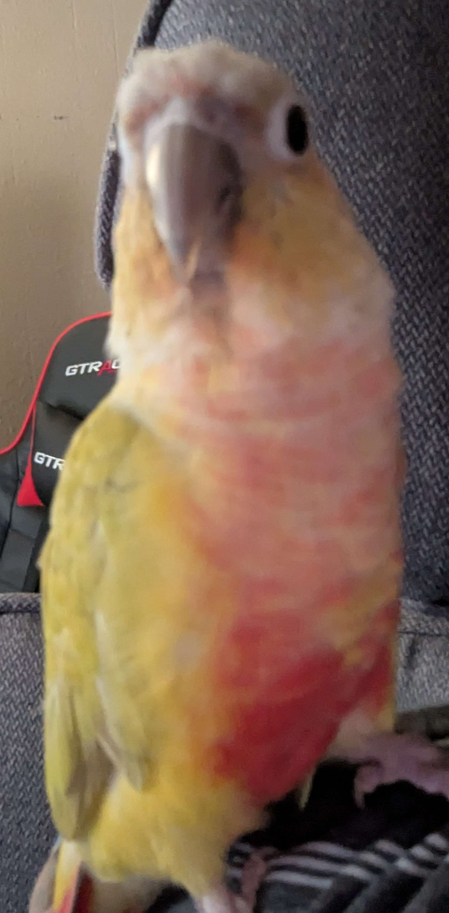
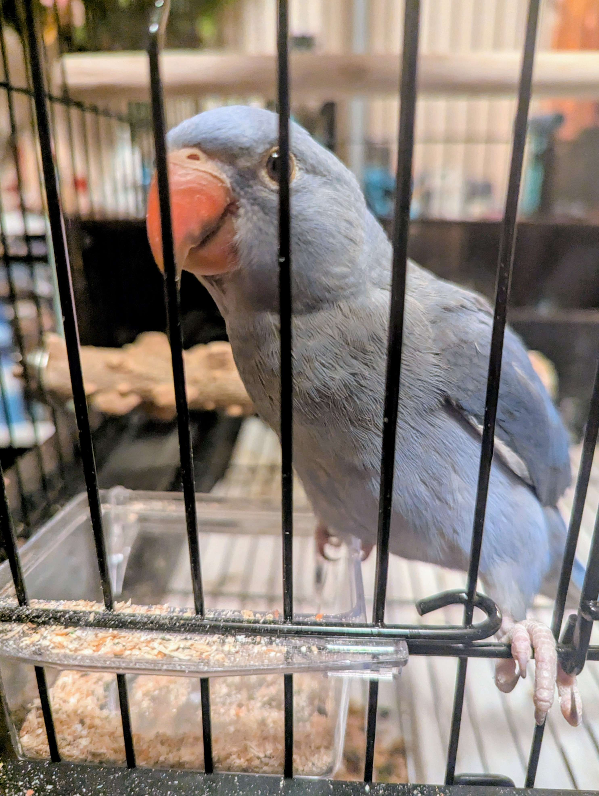

About TitanTech
Learn about our mission, our team, and how we're helping the Path of Titans community manage and share mods
Staff Favorite Playlist
Our Mission
TitanTech was created with a simple mission: to make Path of Titans server management easier for administrators and more accessible for players.
As passionate gamers and Path of Titans enthusiasts, we recognized the challenges server owners face when managing multiple mods across their servers. We built this platform to streamline the process of organizing, sharing, and discovering mods.
Our goal is to foster a thriving community where creativity is celebrated and server administrators have the tools they need to create unique gaming experiences.

Our Journey
Concept Development
The idea for TitanTech was born from discussions in the Path of Titans community about the need for better mod management tools.
Early Development
Development began on the core features of the platform, with a focus on server profiles and mod organization.
Beta Testing
The beta version of TitanTech was released to a select group of Path of Titans server administrators for testing and feedback.
Public Launch
TitanTech officially launched to the public, allowing all Path of Titans server owners to create and share their server profiles.
Ongoing Development
We continue to improve the platform based on user feedback, adding new features and enhancing existing ones to better serve the community.
Meet Our Team
TitanTech is developed and maintained by a small but dedicated team of Path of Titans enthusiasts who are passionate about creating tools for the community.

Bass Rhombus
Path of Titans server admin who's also a coding genius
mars
Systems engineer specializing in secure and scalable server architecture

Breakfast
Early to rise, first to strategize. Breakfast keeps the team chirping along with fresh ideas and sharp focus!

Lunch
Always ready for a midday mission.

Dinner
Finishing the day sunny side up.

Reaver
Ensures everything works as intended.
Frequently Asked Questions
TitanTech is a platform designed to help Path of Titans server administrators manage and share their server mods. It allows for the creation of server profiles, mod organization, and easy sharing with the community.
No, TitanTech is a fan-made project and is not officially affiliated with Path of Titans or its developers. We are a community tool created by enthusiasts to help other players.
To create a server profile, you'll need to log in with your Discord account. Once logged in, navigate to the Mod Manager and click on "Create New Profile". Follow the prompts to set up your server information and add mods.
Yes, TitanTech is completely free to use for both server administrators and community members. We may introduce premium features in the future, but the core functionality will always remain free.
We welcome contributions from the community! You can help by providing feedback, reporting bugs, suggesting features, or even contributing code if you're a developer. Join our Discord server to learn more about how you can get involved.
Contact Us
Have questions, suggestions, or just want to say hello? We'd love to hear from you!
Get in Touch
Join our Discord: discord.gg/dinomodhub
Email: support@titantech.party
Twitter: @DinoModHub
Support Hours
We typically respond to inquiries within 24-48 hours, 7 days a week.